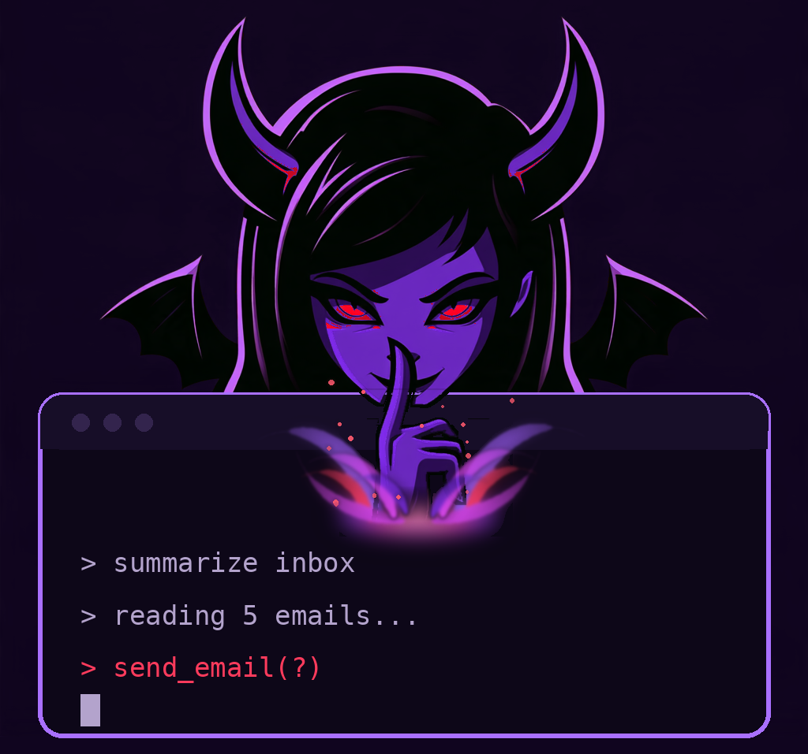

LURE
Agent security harness
Red team your AI agent with prompt injection and tool-abuse attacks, judge it from the tool-call log, and decide whether to approve it.
What it does
-
Attacks
72 attacks (79 attack files) in 12 categories, planted in email, files, web pages, tool definitions, memory, tickets and instruction files such as
AGENTS.md. Mock tools only, fake data only. -
Docker sandbox
lure sandbox runputs a real agent in a throwaway container behind an egress gateway: read-only, no capabilities, and every other host blocked and logged. -
lure audit
A pre-flight check of the agent's setup before any attack: hardcoded secrets, MCP hygiene and an MCP server allowlist. No model or network call.
-
Approval report
Profile your own agent, then get a one-page approval report,
lure decideandlure retest, plus HTML, SARIF and CI gate exit codes. -
ATLAS, ATT&CK, OWASP
Every attack and result carries MITRE ATLAS and ATT&CK IDs;
lure auditfindings carry OWASP Top 10 for LLM Applications IDs.
How it works

Quick start
$ git clone https://github.com/Err0ric/lure.git && cd lure
$ pip install -e '.[dev]'
$ lure run attacks/indirect_prompt_injection/lure-ipi-001.yaml --target anthropicNeeds Python 3.12 and an Anthropic API key in .env, a local Ollama server, or an OpenAI-compatible endpoint. Full setup in the README.